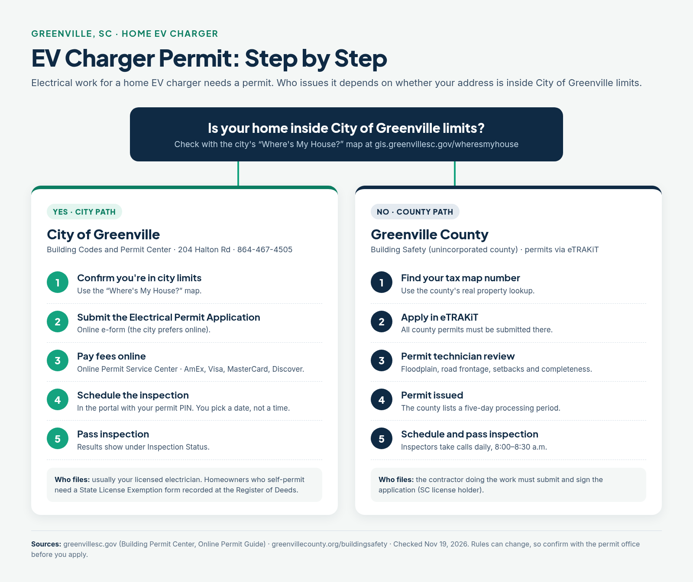
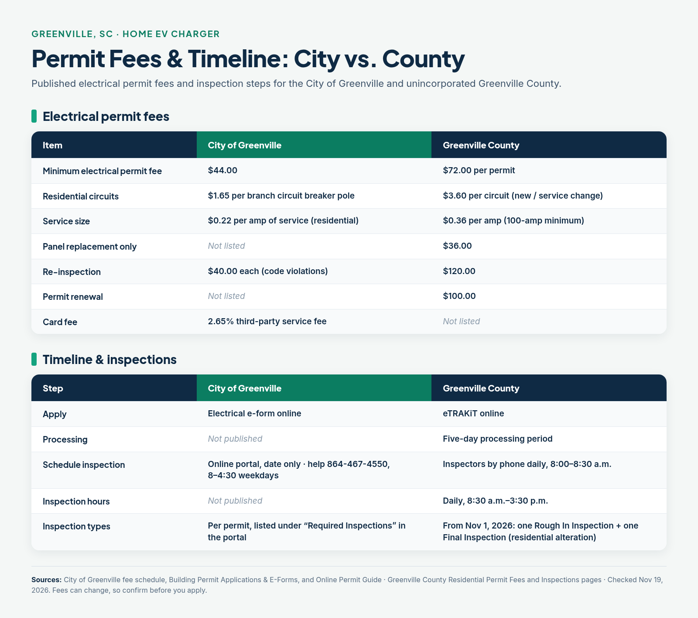

Greenville EV Charger Permit Guide
Last Updated On: November 19, 2026
Installing a Level 2 charger at a Greenville home means adding or changing electrical wiring, and that needs a permit and an inspection. The tricky part is knowing which office issues it. A "Greenville" mailing address doesn't tell you whether you're inside the City of Greenville. This guide covers who issues the permit, how to apply, what it costs, how inspections work, and how the permit ties into Duke Energy's Charger Prep Credit.
For the other towns in the county, see our permits overview: city vs county.
Do you need a permit for a home EV charger in Greenville?
Yes, in almost every case. The City of Greenville's code says anyone who intends to "erect, install, enlarge, alter, repair, remove, convert or replace any electrical... system" must first apply for and get a permit (City of Greenville: Do You Need A Permit?). Greenville County uses the same rule and lists "all electrical" work as needing a permit (Greenville County Building Safety: Permits).
The city's short list of electrical exceptions covers things like cord-and-plug decorative lighting, swapping a breaker of the same size in the same spot, and very low-voltage wiring. A new 240-volt circuit for a charger isn't on that list.
City of Greenville or Greenville County: who issues your permit?
It depends on whether the property is inside city limits.
- Inside City of Greenville limits: the City of Greenville Building Codes and Permit Center issues the permit.
- Outside city limits, in unincorporated Greenville County: Greenville County Building Safety issues it.
How to check if you're inside city limits
- Enter your address in the city's Where's My House? map. It tells you whether the address is inside the City of Greenville.
- Or look up your parcel and tax map number on Greenville County Real Property Search. You'll need the tax map number for a county permit anyway.
- Your installer can usually tell you too, since they pull permits across the county.
How to apply for an EV charger permit in the City of Greenville

- Confirm you're in city limits with Where's My House?.
- Submit the Electrical Permit Application (e-form). The city lists it on its Building Permit Applications E-Forms page as the application "used for all electrical work within any structure both residential and commercial." The city says it prefers online applications.
- Pay the fees online. The Online Permit Service Center lets permit holders pay fees, print permits and check status. The city accepts American Express, Visa, Mastercard and Discover (City of Greenville Building Permits Online Guide).
- Schedule the inspection in the same portal under Schedule/Cancel Inspections, using the PIN on your permit. You choose a date, not a time of day.
- Pass the inspection. You can see results under Inspection Status in the portal.
Who files it? Usually your licensed electrician. Homeowners who want to do their own work must file the city's State License Exemption Request for Homeowners, which has to be recorded with the Greenville County Register of Deeds first.
Contact: Building Codes and Permit Center, 204 Halton Rd, Greenville, SC 29607. Phone 864-467-4505. Walk-up hours are 8 a.m. to 4:30 p.m. (City of Greenville Building & Permit Center).
How to apply in unincorporated Greenville County
- Find your tax map number. The county says every permit application needs either a tax map number or an active permit number for the site (Greenville County Permits).
- Apply through eTRAKiT. The county says all permits must be submitted through eTRAKiT. Setup steps are in the county's eTRAKiT user manual.
- Wait for review. A permit technician checks the application for floodplain, road frontage, setbacks and completeness.
- Get the permit issued. The county currently lists a five-day processing period.
- Schedule and pass inspection.
Who files it? If a contractor does the work, the contractor (an SC license holder) must submit and sign the application. If you do the work yourself as the owner, you submit it, and owner-builder permits come with conditions listed on the county's page.
Greenville EV charger permit fees
These are the published electrical permit fees. Your exact fee depends on what's on the permit, so your installer will have the final number.
| Item | City of Greenville | Greenville County (unincorporated) |
|---|---|---|
| Minimum electrical permit fee | $44.00 | $72.00 per permit |
| Residential circuits | $1.65 per branch circuit breaker pole | $3.60 per circuit (new or service change) |
| Service size (new or service change) | $0.22 per amp of service (residential) | $0.36 per amp (100-amp minimum) |
| Panel replacement only | Not listed separately | $36.00 |
| Re-inspection fee | $40.00 each (for code violations) | $120.00 |
| Permit renewal | Not listed | $100.00 |
| Card payment fee | 2.65% third-party service fee | Not listed |
| Source | City fee schedules (PDF) | County residential permit fees (PDF) |
The city's 2.65% card fee is listed on its e-forms page. For a single charger circuit, the per-pole or per-circuit line items are small, so the minimum fee often sets the total.
How long it takes, and how inspections work

| Step | City of Greenville | Greenville County (unincorporated) |
|---|---|---|
| Apply | Electrical e-form, online | eTRAKiT, online |
| Processing time | Not published | Five-day processing period (county notice) |
| Schedule inspection | Online Permit Service Center; pick a date, not a time. Help line 864-467-4550, 8 a.m. to 4:30 p.m. weekdays | Inspectors take calls daily 8:00 to 8:30 a.m. |
| Inspection hours | Not published | Daily, 8:30 a.m. to 3:30 p.m. |
| Inspection types | Listed for your permit under "Required Inspections" in the portal | From Nov 1, 2026, residential alteration permits use one "Rough In Inspection" and one "Final Inspection" |
Sources: City Building Permits Online Guide, Greenville County Permits, Greenville County Inspections.
If your project includes a panel upgrade, plan for more time, since your utility has to schedule the disconnect and reconnect.
Which power company serves you, and does Duke's Charger Prep Credit apply?
Duke Energy Carolinas serves the Upstate, including Greenville County (Duke Energy news release). Two electric co-ops also serve parts of Greenville County: Blue Ridge Electric Cooperative and Laurens Electric Cooperative. The name on your power bill tells you which one you have. See which utility serves you.
Duke Energy's Charger Prep Credit
If Duke is your utility, its Charger Prep Credit pays back part of the cost of getting your home ready for a Level 2 charger. Per Duke's page:
| Cost | Counts toward the credit? |
|---|---|
| Conduit, wiring and outlets supplying the charger | Yes |
| Panel upgrades and breaker installation | Yes |
| EV charger hardware | No |
| Hardware mounting and commissioning | No |
| Pulling permits and fees | No |
There are two ways to get it:
- Customer Credit Option: you pick your electrician, then submit the paid invoice to Duke and get a check. Duke says this covers prep work done in the last four months.
- Contractor Credit Option: Duke helps you choose an electrical contractor, and the credit shows up as a discount on the contractor's final bill.
Your permit matters here. Duke's latest program report to the SC Public Service Commission says applications are marked invalid without a detailed invoice with separate labor and materials lines, a copy of the approved permit from the local permitting authority, a summary of any grant funding, and proof of EV registration. It also says the service address has to match the address on the EV registration (Duke semi-annual update to the SC PSC, Sept. 2026). Keep a copy of your approved city or county permit.
Duke's page doesn't publish the dollar amount. Ask Duke or your installer for the current credit before you count on it. Read more in our Duke Charger Prep Credit guide.
FAQ
Do I pull the permit or does my electrician?
Usually your electrician. In the county, a contractor doing the work must submit and sign the application. Homeowners can pull their own permit in both the city and the county, but only under each office's owner-builder rules.
How do I know if my Greenville address is in the city?
Use the city's Where's My House? map. If it's not in the city, Greenville County Building Safety handles your permit.
How much is an EV charger permit in the City of Greenville?
The city's minimum electrical permit fee is $44.00. Residential branch circuit breakers are $1.65 per pole, and a 2.65% service fee applies to card payments.
How much is an EV charger permit in Greenville County?
The county's minimum electrical permit fee is $72.00 per permit, with $3.60 per circuit and $0.36 per amp of service on new or service-change permits.
How long does a permit take?
Greenville County currently lists a five-day processing period. The City of Greenville doesn't publish a processing time, so ask your installer.
Does Duke's credit pay for the permit?
No. Duke's page says pulling permits and permit fees don't count toward the Charger Prep Credit. You still need the approved permit to apply.
I'm a Blue Ridge or Laurens Electric member. Can I get Duke's credit?
The Charger Prep Credit is a Duke Energy program. If your bill comes from a co-op, call it and ask about EV programs.
Find a licensed installer in Greenville
Your installer will handle the permit, the inspection and, if you're with Duke, the paperwork for the credit. See the ranked list of EV charger installers serving Greenville, or check what a typical job runs in our installation cost guide.